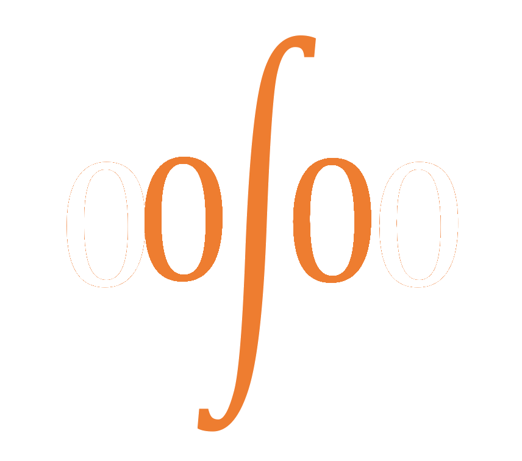

Open Science Organization
Our north star
A self-governing, self-sustaining organization that stewards humanity's collective intelligence, rewards every idea for what it makes possible, and keeps opening new frontiers of research.
How we started
OSO began in 2017 with a simple observation: science is a collective effort, yet the way it is funded, reviewed and published is closed, slow and controlled by a few intermediaries. We proposed an open, community-owned alternative in which every intellectual contribution is an idea, ideas are connected to the ideas they build on, and value flows back to the work that made new work possible.
Between 2017 and 2020, a group of researchers and engineers wrote the founding papers and built early prototypes. In 2020 the project went quiet.
Why we are restarting
In 2026 we decided to restart. AI can now do much of the judgment work our design needed: understanding how one piece of work depends on another, screening submissions, and helping reviewers. Open research data lets us start from the existing literature instead of an empty network. And as AI begins to produce research at scale, open and accountable attribution matters more than ever.
Where we are
- Founding ideas and early prototypes, 2017–2020
- Restart and a draft design, October 2026
- Now: reviewing the design and building the first working prototype
- Then: a first community, an open and funded network, and step by step, governance by the community itself
Read the design
The design doc sets out the vision, the principles and the plan, and links to the detailed proposals.
Help us build it
We are looking for researchers, engineers, designers and funders who want research to be open and fair. Read the design and challenge it, take up an open question, or propose an idea of your own.
Write to us at contact@oso.network (email) or join the discussion on GitHub.